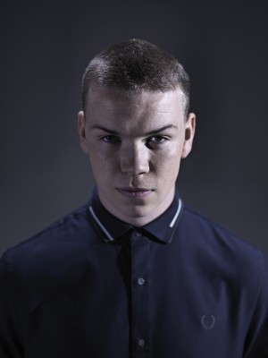
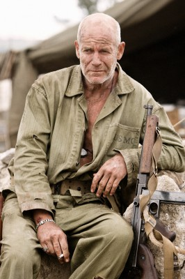
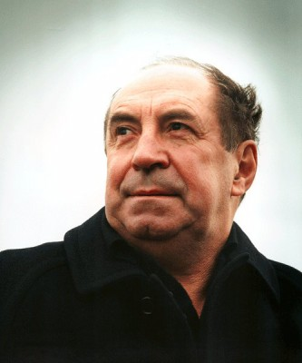

#712 Chroniken von Narnia 3 - Die Reise auf der Morgenröte
Alternativ: The Chronicles of Narnia: The Voyage of the Dawn Treader


 IMDB-Wertung: 6.3 / 10
IMDB-Wertung: 6.3 / 10  Metascore: 53
Metascore: 53 
Die Geschwister Edmund und Lucy verbringen einen langen, lausigen Sommer bei ihrem unausstehlich besserwisserischen Cousin Eustacius Knilch. Ihre bedauerliche, an Abenteuern arme Lage ändert sich, als sie von einem Gemälde verschlungen und auf das Schiff Morgenröte, dass den Ozean von Narnia druchquert, gespült werden. Dort treffen sie auf alte Bekannte: Ihr blaublütiger Freund Kaspian und die Krieger-Maus Reepicheep warten schon auf sie. Gemeinsam werden sie von dem Löwen Aslan auf eine geheimnissvolle Mission geschickt...
Jahr: 2010
Dauer: 113 Minuten
FSK: 12
Land: USA Studio: Fox-WaldenTonspuren: DTS - ,
Untertitel: Deutsch, Englisch,
Auflösung: 1080p (1920x1080) Größe: 14950 MB
Genre: Abenteuer, Familie, Fantasy
Regisseur:  Michael Apted
Michael Apted
Drehbuch: Christopher Markus, Stephen McFeely, Michael Petroni, C.S. Lewis
Soundtrack: David Arnold
Darsteller:
- Georgie Henley als Lucy Pevensie
- Skandar Keynes als Edmund Pevensie
 Ben Barnes als Caspian
Ben Barnes als Caspian-  Will Poulter als Eustace Scrubb
-  Gary Sweet als Drinian
 Bruce Spence als Lord Rhoop
Bruce Spence als Lord Rhoop- Laura Brent als Liliandil
 Tilda Swinton als The White Witch
Tilda Swinton als The White Witch Anna Popplewell als Susan Pevensie
Anna Popplewell als Susan Pevensie- William Moseley als Peter Pevensie
 Shane Rangi als Tavros
Shane Rangi als Tavros Arthur Angel als Rhince
Arthur Angel als Rhince- Arabella Morton als Gael
- Rachel Blakely als Gael's Mum
- Steven Rooke als Faun
- Tony Nixon als 1st Mate
- Jared Robinsen als Intake Officer
-  Roy Billing als Chief Dufflepud
- Greg Poppleton als Dufflepud #3
 Nathaniel Parker als Caspian's Father
Nathaniel Parker als Caspian's Father- Mirko Grillini als Telmarine Sailor
- Laurence Coy als Photographer
- Megan Peta Hill als Pretty Young Nurse
 Liam Neeson als Aslan
Liam Neeson als Aslan Simon Pegg als Reepicheep
Simon Pegg als Reepicheep- Rowan Chapman als Crew Member , uncredited
- Ozzie Devrish als Slaver , uncredited
- Michael M. Foster als Slaver , uncredited
- Daniel Frawley als British Soldier , uncredited
- Kamran Fulleylove als Sailor , uncredited
- Ian Rennie als Sailor , uncredited
- Nicholas Schodel als Slaver , uncredited
- Terry Norris als Lord Bern
- Bille Brown als Coriakin
- Colin Moody als Auctioneer
- David Vallon als Slave Trader
- Neil Young als Dufflepud #2
- Nicholas Neild als Dufflepud #4
- Daniel Poole als Young Man
- Ron Kelly als Steward
- Douglas Gresham als Slaver #1
- Michael Maguire als Slaver #2
- Catarina Hebbard als Gael's Aunt
- Tamati Rangi als Minotaur
- Lucas Ross als Handsome Soldier
- David Sachet als Trader
- Ross Price als First Mate
- Alex Anstey als BBC News Announcer , uncredited
- Damien Bryson als Slaver , uncredited
- Morgan Evans als Slaver , uncredited
Datei: X:\3-Trilogie(A-F)\Chroniken von Narnia\Chroniken von Narnia 3 - Die Reise auf der Morgenröte (2010, FSK12, 1920x1080).mkv seit 16.03.2015
Festplatte: HD Collection-2(A-Z)-3(A-M)
 Es gibt insgesamt 7 Filme in der Gruppe '3-Trilogie(A-F)\Chroniken von Narnia'
Es gibt insgesamt 7 Filme in der Gruppe '3-Trilogie(A-F)\Chroniken von Narnia'